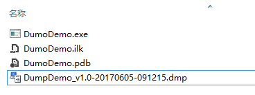
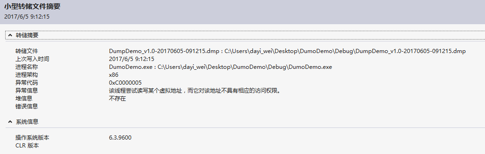
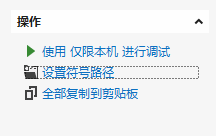
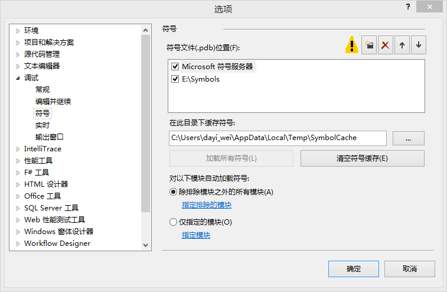
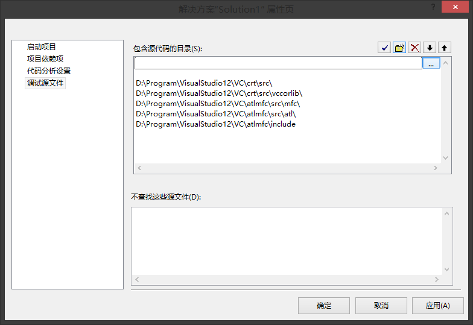
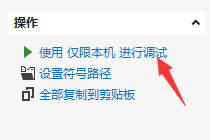
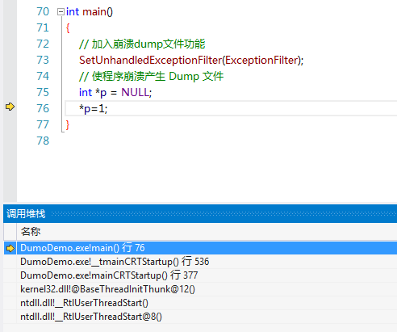

前一节我讲了怎么设置C++崩溃时生成Dump文件 , 点击 传送门 , 这一节我讲讲怎么使用 VS2012 调试生成的 Dump 文件 , 甚至可以精确到出错的那一行代码上面 ;
我在主函数写了如下崩溃代码 :
int main()
{
// 加入崩溃dump文件功能
SetUnhandledExceptionFilter(ExceptionFilter);
// 使程序崩溃产生 Dump 文件
int *p = NULL;
*p=1;
}
双击运行主程序 , 产生了 Dump 文件 DumpDemo_v1.0-20170605-091215.dmp , 如下图所示 :

双击打开生成的 Dump 文件 , 会默认用 VS2012 打开并自动创建一个解决方案 , Dump 摘要信息如下 :

一定要确保 进程名称 对应的程序路径在本地存在 , 同时确保最初生成程序的对应 .pdb 符号文件也在当前目录 ;
有时从客户那里反馈回来的 Dump 文件程序路径和本地的不一致 , 需要将程序拷贝到 Dump 信息里面的路径中去 ;
调试文件需要对应的符号文件 , 我们需要设置符号文件对应的路径 :
在 Dump 信息摘要右上角 , 点击 设置符号路径 :

推荐使用 Microsoft 符号服务器 , 但第一次在线下载会有点慢 ; 当然也可以自己下载符号集文件到某个路径 , 再讲符号路径指向该路径 :

在左侧的解决方案处右键点击 属性 -> 调试源文件 , 将源代码的路径添加进来 , 注意一定是解决方案所在的路径 :

准备工作已就绪 , 现在在 Dump 文件摘要右上角点击 使用 仅限本机 进行调试 :

如果提示
无法找到调试信息 , 或者调试信息不匹配 , 无法查找或打开 PDB 文件, 说明没有将最初生成程序的对应.pdb符号文件放在调试程序所在的目录 , 或者.pdb符号文件与当前的程序版本不匹配 ;
程序会重现当时崩溃前的调用堆栈 , 如下图所示 :

可以看出程序已经定位到了崩溃前的那一行代码 , 非常方便排查 ;